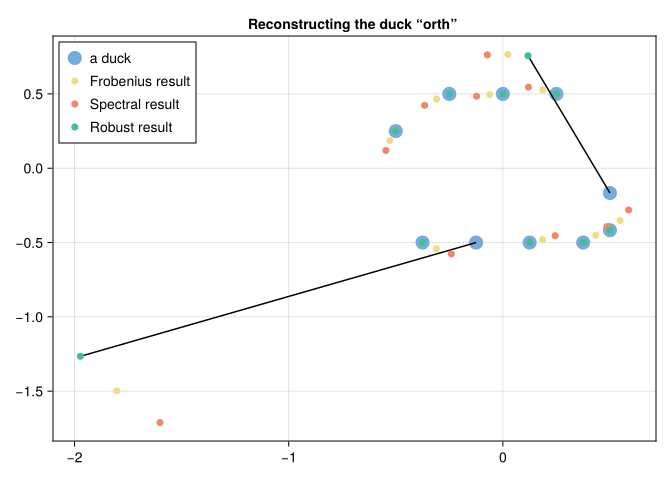
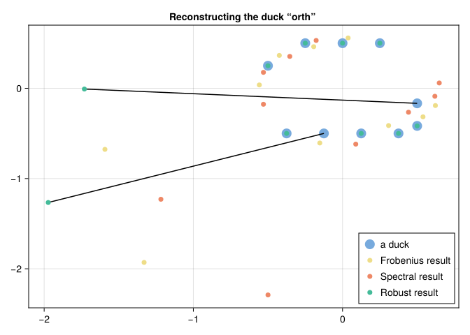
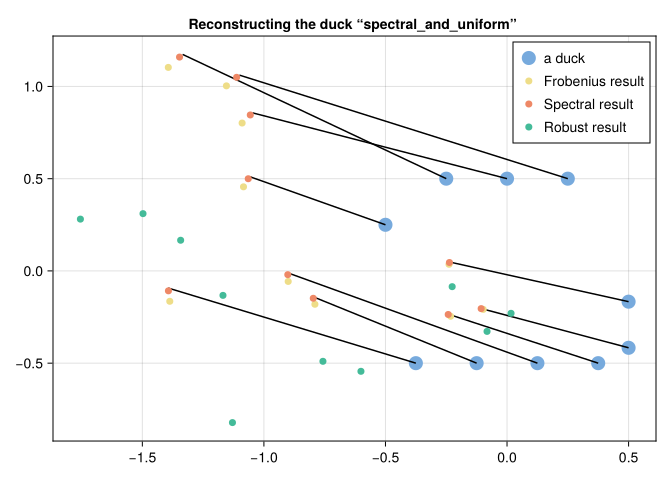

A 2D illustration of Spectral and Robust Procrustes
Ronny Bergmann 2025-11-10
using CairoMakie, CSV, DataFrames, LinearAlgebra, Manifolds, Manopt, NamedColors, PrettyTables, RandomThis example reproduces the results preented in Section 5 of [JBK+25] about the effect of the Procrustes problem
\[\operatorname*{arg\,min}_{p \in \mathrm{SO}(n)} \lVert A - pB\rVert_s\]
for different norms $s ∈ \{\mathrm{F},\mathrm{S},\mathrm{R}\}$, namely the Frobenius, spectral and a robust norm, respectively.
We first define a set of points, that originally started with a duch example from the master thesis of S. Oddsen, hence the name “duck”, though for this experiment it is merely an abstract idea of a duck.
duck = [
# 1 left (a bit moved up), maybe a beak
# 2 right (a bit moved down), maybe a tail
# 3 top, maybe its head
# 4 bottom – feat are under water, so we have an abstract duck!
-1/2 1/2 1/2 -1/4 0.0 1/4 -3/8 -1/8 1/8 3/8;
1/4 -2/12 -5/12 1/2 1/2 1/2 -1/2 -1/2 -1/2 -1/2
]The general scheme of the following experiments is as follows: We first rotate the duck by a known angle, then apply certain noises and try to recover the true rotation angle.
α_true = 5π/8
R(α) = [cos(α) sin(α); -sin(α) cos(α)]
α(R) = atan(R[2,1], R[1,1])
error_on_nonoutliers(res, remaining_indices) = norm(
res[:,remaining_indices]-duck[:,remaining_indices]
)
# true exact minimizer if there were not errors
p_true = R(-α_true) # Point on SO(2), the true reconstruction point we aim for
rotated_duck = p_true'*duckManifold, costs, and minimizers
M = Rotations(2)@doc raw"""
Spectral_cost(M, p)
Compute the spectral norm ``\lVert p\cdot B- A\rVert_2``.
"""
Spectral_cost(M, p; B=r_duck, A=duck) = opnorm(p*B - A)
@doc raw"""
Frobenius_cost(M, p)
Compute the Frobenious norm ``\lVert p\cdot B- A\rVert_{\mathrm{F}}``.
"""
Frobenius_cost(M, p; B=r_duck, A=duck) = norm(p*B - A)
@doc raw"""
Robust_cost(M, p)
Compute the 2-1-norm ``\lVert p\cdot B- A\rVert_{2,1}``, i.e. the sum of the 2-norms of the columns.
"""
Robust_cost(M,p; B=r_duck, A=duck) = sum([norm(c, 2.0) for c in eachcol(p*B-A)])p0 = Matrix{Float64}(I,2,2)2×2 Matrix{Float64}:
1.0 0.0
0.0 1.0function Frobenius_minimizer(A,B; p0=p0)
svd_AB = svd(A*B')
return svd_AB.U*svd_AB.V'
end
function spectral_minimizer(A,B; p0=p0)
return mesh_adaptive_direct_search(
M,
(M,p) -> Spectral_cost(M, p; A=A, B=B), p0;
debug=[:Iteration, :Cost, "\n", 10, :Stop]
)
end
function robust_minimizer(A, B; p0=p0)
return mesh_adaptive_direct_search(
M,
(M,p) -> Robust_cost(M, p; A=A, B=B), p0;
debug=[:Iteration, :Cost, "\n", 10, :Stop]
)
endExperiment 1: Outliers that are orthogonal and the same distance
We start with two outliers at the same (even) distance
sub_experiment1 = "even"
outlier_shifts1 = [[2.0, 0.0], [0.0,2.0]]
outlier_indices1 = [2,8]
remaining_indices1 = [k for k=1:size(duck,2) if k ∉ outlier_indices1]Since we apply these outliers after rotation, one way to illustrate them on the duck is to rotate them back and draw that into the original data.
outlier_shifts1_rp = [R(-α_true)x for x in outlier_shifts1]
outlier_lines1 = [
[
[
duck[xy,outlier_indices1[k]],
duck[xy,outlier_indices1[k]] + outlier_shifts1_rp[k][xy]
] for xy = 1:2
]
for k=1:length(outlier_indices1)
]outliers1_rotated_duck = copy(rotated_duck)
# generate outliers on the rotated duck
for (i,k) in enumerate(outlier_indices1)
outliers1_rotated_duck[:,k] += outlier_shifts1[i]
endWe compute the minimizers
p1F = Frobenius_minimizer(duck, outliers1_rotated_duck)
p1S = spectral_minimizer(duck, outliers1_rotated_duck)
p1R = robust_minimizer(duck, outliers1_rotated_duck)
nothingInitial f(x): 2.929307
# 10 f(x): 2.000000
# 20 f(x): 2.000000
# 30 f(x): 2.000000
The algorithm computed a poll step size (5.820766091346741e-11) less than 1.0e-10.
Initial f(x): 9.096802
# 10 f(x): 4.000000
# 20 f(x): 4.000000
# 30 f(x): 4.000000
The algorithm computed a poll step size (5.820766091346741e-11) less than 1.0e-10.and we generate the rotated results
duck1F = p1F * outliers1_rotated_duck
duck1S = p1S * outliers1_rotated_duck
duck1R = p1R * outliers1_rotated_duckThe result is
res1_fig = Figure()
res1_ax = Axis(res1_fig[1, 1], title="Reconstructing the duck “$(sub_experiment1)” ")
scatter!(res1_ax, duck[1,:], duck[2,:], label="a duck", color=color_duck, markersize=20)
for k=1:length(outlier_indices1)
lines!(res1_ax, outlier_lines1[k][1], outlier_lines1[k][2], color=:black)
end
scatter!(res1_ax, duck1F[1,:], duck1F[2,:], label="Frobenius result", color=color_Frobenius, markersize=10)
scatter!(res1_ax, duck1S[1,:], duck1S[2,:], label="Spectral result", color=color_spectral, markersize=10)
scatter!(res1_ax, duck1R[1,:], duck1R[2,:], label="Robust result", color=color_robust, markersize=10)
axislegend(res1_ax,position = :lt)
res1_fig
We can also look at the numbers: How well the angle is reconstructed and how large the error on the non-outliers is;
α_errors = [α(p1F), α(p1S), α(p1R)] .- α_true
l2_errors = [error_on_nonoutliers(d, remaining_indices1) for d in [duck1F, duck1S, duck1R]]
pretty_table(
DataFrame(:rownames => ["angle", "non-outlier"], :F => [α_errors[1], l2_errors[1]], :S => [α_errors[2], l2_errors[2]], :R => [α_errors[3], l2_errors[3]]);
backend=:markdown, column_labels = ["error on", "Frobenius", "spectral", "robust"])| error on | Frobenius | spectral | robust |
|---|---|---|---|
| angle | 0.0102065 | -2.22045e-16 | -2.22045e-16 |
| non-outlier | 0.0166399 | 4.23505e-16 | 4.23505e-16 |
We see both in outlier error and angle reconstruction, Frobenius is not reconstructions perfectly, while both spectral and robust do.
Experiment 2: Outliers that are orthogonal and the same distance
We start with two outliers that are orthogonal but of different length in movement.
sub_experiment2 = "orth"
outlier_shifts2 = [[1.0, 0.0], [0.0,2.0]]
outlier_indices2 = [2,8]
remaining_indices2 = [k for k=1:size(duck,2) if k ∉ outlier_indices2]Since we apply these outliers after rotation, one way to illustrate them on the duck is to rotate them back and draw that into the original data.
outlier_shifts2_rp = [R(-α_true)x for x in outlier_shifts2]
outlier_lines2 = [
[
[
duck[xy,outlier_indices2[k]],
duck[xy,outlier_indices2[k]] + outlier_shifts2_rp[k][xy]
] for xy = 1:2
]
for k=1:length(outlier_indices2)
]outliers2_rotated_duck = copy(rotated_duck)
# generate outliers on the rotated duck
for (i,k) in enumerate(outlier_indices2)
outliers2_rotated_duck[:,k] += outlier_shifts2[i]
endWe compute the minimizers
p2F = Frobenius_minimizer(duck, outliers2_rotated_duck)
p2S = spectral_minimizer(duck, outliers2_rotated_duck)
p2R = robust_minimizer(duck, outliers2_rotated_duck)
nothingInitial f(x): 2.929222
# 10 f(x): 1.948920
# 20 f(x): 1.947072
# 30 f(x): 1.947072
# 40 f(x): 1.947072
# 50 f(x): 1.947072
# 60 f(x): 1.947072
The algorithm computed a poll step size (5.820766091346741e-11) less than 1.0e-10.
Initial f(x): 8.101267
# 10 f(x): 3.000000
# 20 f(x): 3.000000
# 30 f(x): 3.000000
The algorithm computed a poll step size (5.820766091346741e-11) less than 1.0e-10.and we generate the rotated results
duck2F = p2F * outliers2_rotated_duck
duck2S = p2S * outliers2_rotated_duck
duck2R = p2R * outliers2_rotated_duckThe result is
res2_fig = Figure()
res2_ax = Axis(res2_fig[1, 1], title="Reconstructing the duck “$(sub_experiment2)” ")
scatter!(res2_ax, duck[1,:], duck[2,:], label="a duck", color=color_duck, markersize=20)
for k=1:length(outlier_indices2)
lines!(res2_ax, outlier_lines2[k][1], outlier_lines2[k][2], color=:black)
end
scatter!(res2_ax, duck2F[1,:], duck2F[2,:], label="Frobenius result", color=color_Frobenius, markersize=10)
scatter!(res2_ax, duck2S[1,:], duck2S[2,:], label="Spectral result", color=color_spectral, markersize=10)
scatter!(res2_ax, duck2R[1,:], duck2R[2,:], label="Robust result", color=color_robust, markersize=10)
axislegend(res2_ax,position = :lt)
res2_fig
Again we can look at both the angle and non-outlier errors:
α_errors = [α(p2F), α(p2S), α(p2R)] .- α_true
l2_errors = [error_on_nonoutliers(d, remaining_indices1) for d in [duck2F, duck2S, duck2R]]
pretty_table(
DataFrame(:rownames => ["angle", "non-outlier"], :F => [α_errors[1], l2_errors[1]], :S => [α_errors[2], l2_errors[2]], :R => [α_errors[3], l2_errors[3]]);
backend = :markdown, column_labels = ["error on", "Frobenius", "spectral", "robust"])| error on | Frobenius | spectral | robust |
|---|---|---|---|
| angle | 0.123315 | 0.248392 | -2.22045e-16 |
| non-outlier | 0.200917 | 0.403922 | 4.23505e-16 |
For this second experiment both the figure and the errors indicate, that robust is still reconstructing perfectly, while spectral even performs worth than Frobenius.
Experiment 3: Outliers that are orthogonal and the same distance
We continue with two outliers that are neither of same length nor orthogonal.
sub_experiment3 = "orth"
outlier_shifts3 = [[1.0, 2.0], [0.0,2.0]]
outlier_indices3 = [2,8]
remaining_indices3 = [k for k=1:size(duck,2) if k ∉ outlier_indices3]Since we apply these outliers after rotation, one way to illustrate them on the duck is to rotate them back and draw that into the original data.
outlier_shifts3_rp = [R(-α_true)x for x in outlier_shifts3]
outlier_lines3 = [
[
[
duck[xy,outlier_indices3[k]],
duck[xy,outlier_indices3[k]] + outlier_shifts3_rp[k][xy]
] for xy = 1:2
]
for k=1:length(outlier_indices3)
]outliers3_rotated_duck = copy(rotated_duck)
# generate outliers on the rotated duck
for (i,k) in enumerate(outlier_indices3)
outliers3_rotated_duck[:,k] += outlier_shifts3[i]
endWe compute the minimizers
p3F = Frobenius_minimizer(duck, outliers3_rotated_duck)
p3S = spectral_minimizer(duck, outliers3_rotated_duck)
p3R = robust_minimizer(duck, outliers3_rotated_duck)
nothingInitial f(x): 3.682931
# 10 f(x): 2.717797
# 20 f(x): 2.717797
# 30 f(x): 2.717797
# 40 f(x): 2.717797
# 50 f(x): 2.717797
The algorithm computed a poll step size (5.820766091346741e-11) less than 1.0e-10.
Initial f(x): 9.791093
# 10 f(x): 4.236068
# 20 f(x): 4.236068
# 30 f(x): 4.236068
The algorithm computed a poll step size (5.820766091346741e-11) less than 1.0e-10.and we generate the rotated results
duck3F = p3F * outliers3_rotated_duck
duck3S = p3S * outliers3_rotated_duck
duck3R = p3R * outliers3_rotated_duckThe result is
res3_fig = Figure()
res3_ax = Axis(res3_fig[1, 1], title="Reconstructing the duck “$(sub_experiment3)” ")
scatter!(res3_ax, duck[1,:], duck[2,:], label="a duck", color=color_duck, markersize=20)
for k=1:length(outlier_indices3)
lines!(res3_ax, outlier_lines3[k][1], outlier_lines3[k][2], color=:black)
end
scatter!(res3_ax, duck3F[1,:], duck3F[2,:], label="Frobenius result", color=color_Frobenius, markersize=10)
scatter!(res3_ax, duck3S[1,:], duck3S[2,:], label="Spectral result", color=color_spectral, markersize=10)
scatter!(res3_ax, duck3R[1,:], duck3R[2,:], label="Robust result", color=color_robust, markersize=10)
axislegend(res3_ax,position = :rb)
res3_fig
Again we can look at both the angle and non-outlier errors:
α_errors = [α(p3F), α(p3S), α(p3R)] .- α_true
l2_errors = [error_on_nonoutliers(d, remaining_indices1) for d in [duck3F, duck3S, duck3R]]
pretty_table(
DataFrame(:rownames => ["angle", "non-outlier"], :F => [α_errors[1], l2_errors[1]], :S => [α_errors[2], l2_errors[2]], :R => [α_errors[3], l2_errors[3]]);
backend = :markdown, column_labels = ["error on", "Frobenius", "spectral", "robust"])| error on | Frobenius | spectral | robust |
|---|---|---|---|
| angle | 0.396949 | 0.785611 | -2.22045e-16 |
| non-outlier | 0.642918 | 1.24812 | 4.23505e-16 |
Also for the third, robust is still performing very well.
Experiment 4: Outliers of rank 1
Next we consider a rank-1 update from the nullspace of the duck.
sub_experiment4 = "spectral"
singular_duck = svd(duck)
V = nullspace(duck)
v = 1/size(V,2) * sum(V, dims=2)
u = [1.0, 1.0]
vt_shift4 = u*v'
outlier_shifts4_all = [ vt_shift4[:,i] for i in 1:size(singular_duck.Vt,2) ]
outlier_indices4 = filter(
(i) -> norm(outlier_shifts4_all[i])>1e-13,
collect(1:length(outlier_shifts4_all))
)
σ = 8.0
outlier_shifts4 = [ σ*outlier_shifts4_all[i] for i in outlier_indices4]
remaining_indices4 = [k for k=1:size(duck,2) if k ∉ outlier_indices4]Since we apply these outliers after rotation, one way to illustrate them on the duck is to rotate them back and draw that into the original data.
outlier_shifts4_rp = [R(-α_true)x for x in outlier_shifts4]
outlier_lines4 = [
[
[
duck[xy,outlier_indices4[k]],
duck[xy,outlier_indices4[k]] + outlier_shifts4_rp[k][xy]
] for xy = 1:2
]
for k=1:length(outlier_indices4)
]outliers4_rotated_duck = copy(rotated_duck)
# generate outliers on the rotated duck
for (i,k) in enumerate(outlier_indices4)
outliers4_rotated_duck[:,k] += outlier_shifts4[i]
endWe compute the minimizers
p4F = Frobenius_minimizer(duck, outliers4_rotated_duck)
p4S = spectral_minimizer(duck, outliers4_rotated_duck)
p4R = robust_minimizer(duck, outliers4_rotated_duck)
nothingInitial f(x): 4.160638
# 10 f(x): 4.000000
# 20 f(x): 4.000000
# 30 f(x): 4.000000
The algorithm computed a poll step size (5.820766091346741e-11) less than 1.0e-10.
Initial f(x): 13.503372
# 10 f(x): 11.887835
# 20 f(x): 11.887818
# 30 f(x): 11.887818
# 40 f(x): 11.887818
# 50 f(x): 11.887818
The algorithm computed a poll step size (5.820766091346741e-11) less than 1.0e-10.and we generate the rotated results
duck4F = p4F * outliers4_rotated_duck
duck4S = p4S * outliers4_rotated_duck
duck4R = p4R * outliers4_rotated_duckThe result is
res4_fig = Figure()
res4_ax = Axis(res4_fig[1, 1], title="Reconstructing the duck “$(sub_experiment4)” ")
scatter!(res4_ax, duck[1,:], duck[2,:], label="a duck", color=color_duck, markersize=20)
for k=1:length(outlier_indices4)
lines!(res4_ax, outlier_lines4[k][1], outlier_lines4[k][2], color=:black)
end
scatter!(res4_ax, duck4F[1,:], duck4F[2,:], label="Frobenius result", color=color_Frobenius, markersize=10)
scatter!(res4_ax, duck4S[1,:], duck4S[2,:], label="Spectral result", color=color_spectral, markersize=10)
scatter!(res4_ax, duck4R[1,:], duck4R[2,:], label="Robust result", color=color_robust, markersize=10)
axislegend(res4_ax,position = :rt)
res4_fig
We can also look at the error, though since all points are outliers, we can only look at the angle reconstruction:
α_errors = [α(p4F), α(p4S), α(p4R)] .- α_true
pretty_table(
DataFrame(:rownames => ["angle", ], :F => [α_errors[1],], :S => [α_errors[2],], :R => [α_errors[3],]);
backend = :markdown, column_labels = ["error on", "Frobenius", "spectral", "robust"])| error on | Frobenius | spectral | robust |
|---|---|---|---|
| angle | 0.0 | -1.82865e-10 | 0.595122 |
now, robust slightly fails, while both Frobenius and spectral perform very well, the algorithm for spectral maybe just stopping a bit early.
Experiment 5: Outliers of rank 1 plus uniform noise
Next we consider a rank-1 update from the nullspace of the duck and add uniform noise
sub_experiment5 = "spectral_and_uniform"
Random.seed!(23)
Rmat = 0.125*rand(size(duck)...)
vt_shift5 = u*v'.+ Rmat
outlier_shifts5_all = [ vt_shift5[:,i] for i in 1:size(singular_duck.Vt,2) ]
outlier_indices5 = filter(
(i) -> norm(outlier_shifts5_all[i])>1e-13,
collect(1:length(outlier_shifts5_all))
)
σ = 4.0
outlier_shifts5 = [ σ*outlier_shifts5_all[i] for i in outlier_indices5]
remaining_indices5 = [k for k=1:size(duck,2) if k ∉ outlier_indices5]Since we apply these outliers after rotation, one way to illustrate them on the duck is to rotate them back and draw that into the original data.
outlier_shifts5_rp = [R(-α_true)x for x in outlier_shifts5]
outlier_lines5 = [
[
[
duck[xy,outlier_indices5[k]],
duck[xy,outlier_indices5[k]] + outlier_shifts5_rp[k][xy]
] for xy = 1:2
]
for k=1:length(outlier_indices5)
]outliers5_rotated_duck = copy(rotated_duck)
# generate outliers on the rotated duck
for (i,k) in enumerate(outlier_indices5)
outliers5_rotated_duck[:,k] += outlier_shifts5[i]
endWe compute the minimizers
p5F = Frobenius_minimizer(duck, outliers5_rotated_duck)
p5S = spectral_minimizer(duck, outliers5_rotated_duck)
p5R = robust_minimizer(duck, outliers5_rotated_duck)
nothingInitial f(x): 3.278339
# 10 f(x): 3.138811
# 20 f(x): 3.138811
# 30 f(x): 3.138811
# 40 f(x): 3.138811
# 50 f(x): 3.138811
The algorithm computed a poll step size (5.820766091346741e-11) less than 1.0e-10.
Initial f(x): 11.255009
# 10 f(x): 9.349293
# 20 f(x): 9.348961
# 30 f(x): 9.348960
# 40 f(x): 9.348960
# 50 f(x): 9.348960
# 60 f(x): 9.348960
The algorithm computed a poll step size (5.820766091346741e-11) less than 1.0e-10.and we generate the rotated results
duck5F = p5F * outliers5_rotated_duck
duck5S = p5S * outliers5_rotated_duck
duck5R = p5R * outliers5_rotated_duckThe result is
res5_fig = Figure()
res5_ax = Axis(res5_fig[1, 1], title="Reconstructing the duck “$(sub_experiment5)” ")
scatter!(res5_ax, duck[1,:], duck[2,:], label="a duck", color=color_duck, markersize=20)
for k=1:length(outlier_indices5)
lines!(res5_ax, outlier_lines5[k][1], outlier_lines5[k][2], color=:black)
end
scatter!(res5_ax, duck5F[1,:], duck5F[2,:], label="Frobenius result", color=color_Frobenius, markersize=10)
scatter!(res5_ax, duck5S[1,:], duck5S[2,:], label="Spectral result", color=color_spectral, markersize=10)
scatter!(res5_ax, duck5R[1,:], duck5R[2,:], label="Robust result", color=color_robust, markersize=10)
axislegend(res5_ax,position = :rt)
res5_fig
We can also look at the error, though since all points are outliers, we can only look at the angle reconstruction:
α_errors = [α(p5F), α(p5S), α(p5R)] .- α_true
pretty_table(
DataFrame(
:rownames => ["angle"],
:F => [α_errors[1]], :S => [α_errors[2]], :R => [α_errors[3]]
);
backend = :markdown,
column_labels = ["error on", "Frobenius", "spectral", "robust"],
)| error on | Frobenius | spectral | robust |
|---|---|---|---|
| angle | 0.0516324 | 0.0107993 | 0.562687 |
Here, booth robust and Frobenius struggle to reconstruct, while spectral performs best.
Technical details
This tutorial is cached. It was last run on the following package versions.
Status `~/work/ManoptExamples.jl/ManoptExamples.jl/examples/Project.toml`
[6e4b80f9] BenchmarkTools v1.6.3
[336ed68f] CSV v0.10.15
[13f3f980] CairoMakie v0.15.8
[0ca39b1e] Chairmarks v1.3.1
[35d6a980] ColorSchemes v3.31.0
[5ae59095] Colors v0.13.1
[a93c6f00] DataFrames v1.8.1
[31c24e10] Distributions v0.25.122
[e9467ef8] GLMakie v0.13.8
[4d00f742] GeometryTypes v0.8.5
[7073ff75] IJulia v1.33.0
[682c06a0] JSON v1.3.0
[8ac3fa9e] LRUCache v1.6.2
[b964fa9f] LaTeXStrings v1.4.0
[d3d80556] LineSearches v7.5.1
[ee78f7c6] Makie v0.24.8
[af67fdf4] ManifoldDiff v0.4.5
[1cead3c2] Manifolds v0.11.8
[3362f125] ManifoldsBase v2.3.0
[0fc0a36d] Manopt v0.5.30
[5b8d5e80] ManoptExamples v0.1.18 `..`
[51fcb6bd] NamedColors v0.2.3
[6fe1bfb0] OffsetArrays v1.17.0
[91a5bcdd] Plots v1.41.2
[08abe8d2] PrettyTables v3.1.2
[6099a3de] PythonCall v0.9.30
[f468eda6] QuadraticModels v0.9.14
[731186ca] RecursiveArrayTools v3.39.0
[1e40b3f8] RipQP v0.7.0This tutorial was last rendered December 14, 2025, 11:48:6.
Literature
- [JBK+25]
- H. Jasa, R. Bergmann, C. Kümmerle, A. Athreya and Z. Lubberts. Procrustes Problems on Random Matrices, preprint (2025), arXiv:2510.05182.